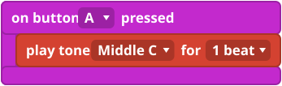
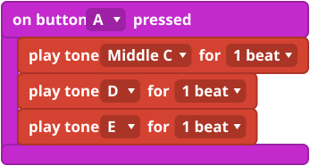
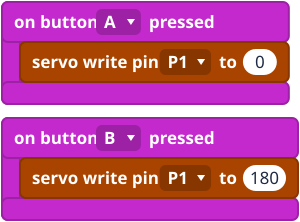

What it is
Sound: a buzzer makes sound by shaking the air very fast. Each note is a number of shakes per second. The play tone block picks the note and how long it lasts.
Movement: a servo is a small motor that turns its arm to an angle and holds it there. The block servo write pin sets the angle.
Plug it in
- Passive buzzer: plug it into pin 0. On a V1, sound comes out of pin 0.
- Mini servo: plug it into pin 1. The black or brown wire goes on the black (G) row and the red wire in the middle. Do not turn the arm by hand: you can break its gears.
A servo can use a lot of power. If the micro:bit restarts or acts strangely, try the battery pack.
The blocks
play tone and rest are in Music. servo write pin is in Pins, under Advanced.


Mini examples



Try this
- Play the first four notes of a song you know.
- Put a rest between two notes.
- Make the servo wave: 0, 180, 0 with pauses between.
- Harder: play a note every time the servo moves.
Common mistakes
- No sound. On a V1 the buzzer must be on pin 0. Check the plug and the wire colours.
- The servo twitches or the micro:bit restarts. The servo may be using more power than the micro:bit can give. Try the battery pack.
- The servo does not move. Check that the black or brown wire is on the black (G) row, and that the pin in the block matches.
The code in words
JavaScript: music.playTone(262, music.beat(BeatFraction.Whole))
pins.servoWritePin(AnalogPin.P1, 90)
Python: music.play_tone(262, music.beat(BeatFraction.WHOLE))
pins.servo_write_pin(AnalogPin.P1, 90)
V1 and V2
A V2 has its own speaker, so the sound comes out of that too. V2 only The block set built-in speaker switches it off if you only want the buzzer.
Teacher notes
- Time: 40 to 60 minutes.
- Ideas covered: sound as numbers, rests and timing, angles.
- Check on your kit: that the buzzer plays on pin 0 and that the servo runs on USB power or needs the battery pack.
- The block pictures are simplified drawings. Check the real blocks in MakeCode.